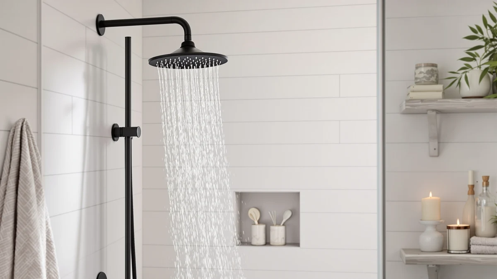

Kohler Forté Single-Function Showerhead Review (2026): Worth It?
Prices and picks verified as of November 2026. Independent, reader-supported reviews.


Quick Answer
The KOHLER Forté Single-Function Showerhead is a polished chrome, 2.5 GPM fixed head built around Katalyst air-induction technology and a single spray pattern, priced at $77.74, the product at the center of this Kohler Forté Single-Function Showerhead review. It suits buyers who want one strong, consistent spray without paying for extra settings, while shoppers who want a detachable handheld sprayer may prefer the Delta or BOZYBO alternatives covered below.
Our pick: KOHLER Forté Single-Function Showerhead 2.5, $77.74 Check Price on Amazon
Bottom line: our top pick is the KOHLER Forté Single-Function Showerhead at $77.74.
Things to Know Before You Buy
- The KOHLER Forté Single-Function Showerhead costs $77.74, less than the $78.94 Delta 5-Setting In2ition but more than the $69.99 Delta 4-Setting and the $47.48 BOZYBO rain head covered later in this Kohler Forté Single-Function Showerhead review.
- Kohler rates it at 2.5 GPM, the maximum flow rate US regulations allow for shower heads, delivered through 66 nozzles on a 5-1/2 inch sprayface.
- It offers one spray setting built around Katalyst air-induction technology, where the two Delta alternatives split their output into four or five selectable modes and add a detachable handheld sprayer.
- The listing does not publish a star rating or review count, so this comparison relies on manufacturer specs, current Amazon pricing, and the pattern of feedback in verified buyer reviews rather than an in-house test.
- All four products in this comparison sit between $47.48 and $78.94, so the decision comes down to spray style and features rather than budget tier.
This Kohler Forté Single-Function Showerhead review breaks down whether the $77.74 10282-AK-CP earns a spot in your bathroom against three similarly priced two-in-one alternatives we compared it against. All four products sit within about thirty dollars of each other, so the decision comes down to spray style, flexibility, and what each brand actually promises on its listing rather than budget.
We pulled the listed specs, current Amazon pricing, and available buyer feedback for the Kohler Forté, the Delta 5-Setting In2ition, the Delta 4-Setting In2ition, and the BOZYBO 12 inch rain shower head, then lined them up side by side. The short version: the Forté is the only one of the four built around a single spray pattern on a fixed head alone, while both Delta models and the BOZYBO pair a fixed or rain-style head with a detachable handheld sprayer and several spray settings.
Why You Should Trust Us
Ilane Tall covers shower fixtures and bathroom hardware for Best Shower Heads, with a focus on water pressure, spray technology, and pricing for US homes. This Kohler Forté Single-Function Showerhead review follows the same process used across the site: start from the manufacturer specs and listed pricing, then check that information against verified Amazon buyer feedback before drawing a conclusion.
We do not accept free products from manufacturers, and every price in this review reflects the listing at the time of publishing. When a claim cannot be verified against the product listing or buyer feedback, we say so instead of guessing.
How We Compared
We did not install or run water through the Kohler Forté or the three alternatives for this Kohler Forté Single-Function Showerhead review. Instead, we built the comparison from manufacturer specifications, current Amazon pricing, and the patterns that show up across verified buyer reviews for each listing.
Water pressure and pipe configuration vary from one home to the next, so for a category like shower heads, comparing documented specs and owner feedback across models gives a more honest picture than one reviewer's experience in one bathroom. We disclose this approach directly: we do not run a fake testing lab, and we would rather tell you what the data shows than invent a story about using these products ourselves for this Kohler Forté Single-Function Showerhead review.
Overview & Specs

KOHLER Forté Single-Function Showerhead 2.5
What we like
- Katalyst technology infuses air into the stream through 66 nozzles on a 5-1/2 inch sprayface, producing bigger drops without raising the 2.5 GPM flow rate
- MasterClean sprayface resists mineral buildup, so wiping it down keeps nozzles clear without scrubbing
- Polished chrome finish that Kohler rates to resist corrosion and tarnish over time
Flaws but not dealbreakers
- One spray setting only, so buyers who want multiple modes on one head should look at the Delta alternatives below instead
- No handheld option, unlike the Delta and BOZYBO picks that pair a fixed head with a detachable sprayer
- The listing does not publish a star rating or review count, so this comparison relies on manufacturer specs and current pricing rather than a feedback trail
| Material | ABS + chrome plating |
| Size | One Size |
The KOHLER Forté Single-Function Showerhead, model 10282-AK-CP, is the simplest design in this Kohler Forté Single-Function Showerhead review and the only fixed head here built around a single spray pattern rather than a menu of settings. Kohler's Katalyst technology pushes water through 66 nozzles on a 5-1/2 inch sprayface and mixes in air along the way, which the brand says creates bigger drops without exceeding the 2.5 GPM flow rate that US regulations cap shower heads at.
At $77.74, it costs less than the $78.94 Delta 5-Setting In2ition but more than the $69.99 Delta 4-Setting and the $47.48 BOZYBO rain head, placing it in the middle of this four-way comparison. The polished chrome finish and MasterClean sprayface match what Kohler buyers typically expect at this price, and the fixed head attaches to a standard 1/2 inch NPT connection, so swapping it in does not require new plumbing.
What We Liked
The clearest strength of the KOHLER Forté is spray quality from a simple design. Katalyst technology mixes air into the stream across 66 nozzles, and Kohler says that produces bigger, heavier drops than a standard fixed head delivers at the same 2.5 GPM flow rate, so you get a spray that feels stronger without using more water.
The MasterClean sprayface also stands out in this Kohler Forté Single-Function Showerhead review. Kohler designed its textured nozzles to resist mineral buildup, which matters most for buyers on hard water who would otherwise need to scrub a shower head every few months.
Keeping the design to one spray setting means fewer moving parts inside the head, where the Delta and BOZYBO alternatives below pack in several selectable modes plus a detachable sprayer. That simplicity is a genuine selling point if you already know you only use one spray style.
What Could Be Better
Flexibility is the tradeoff across this comparison. At $77.74, the Forté costs $1.20 less than the Delta 5-Setting In2ition but $7.75 more than the Delta 4-Setting, and neither Delta model gives up anything on spray count the way the single-setting Forté does for this Kohler Forté Single-Function Showerhead review.
The listing also carries no published rating or review count. Reviewers consistently flag spray pressure and nozzle clogging as the details that separate a good fixed head from a frustrating one, and without that feedback trail, buyers are relying more heavily on the Kohler name than they would with a more established listing.
A single spray setting also means no handheld option. Anyone who wants to rinse a tub, bathe a pet, or wash a child without stepping fully under the head will need one of the two-in-one alternatives covered below instead.
Who Is It For?
If you are reading this Kohler Forté Single-Function Showerhead review because you want one reliable, strong spray from a trusted brand and have no interest in switching between settings, the Forté fits that goal. It suits bathrooms where everyone in the household showers the same way and nobody needs a handheld sprayer.
Skip it if you want a detachable handheld sprayer for cleaning the tub or rinsing kids; the Delta In2ition models and the BOZYBO rain head below are built specifically for that. Skip it too if you want several spray modes to choose from; both Delta alternatives offer four or five settings where the Forté offers one. Readers who want more spray options from the same brand can also check our Kohler 22169-AF Forte Multifunction review.
Buyers who already own a single-setting fixed head and are happy with it do not need to switch for the Forté's specific feature set. For anyone upgrading from an old, low-flow head and wanting a stronger, air-infused spray without added complexity, the Forté is the simplest option in this comparison.
Alternatives to Consider
If the Forté's single-setting design is not what you need, these three alternatives cover the same general shower head category at a comparable price, each with a different tradeoff worth weighing before you buy. We picked them because each one answers a different part of what this Kohler Forté Single-Function Showerhead review sets out to check: does a detachable sprayer or extra spray modes beat the Forté's simplicity, or does it add complexity you will not use?

Premium Choice
Delta 5-Setting In2ition 2-in-1 Dual
Priced at $78.94, just $1.20 more than the Forté, the 5-Setting In2ition trades a single spray pattern for a detachable handheld sprayer and five selectable modes, a straightforward pick if you want more flexibility than a fixed head alone offers.
$78.94
Check Price on Amazon
Best Value
12" High Pressue Rain Shower
The lowest-priced pick at $47.48, the BOZYBO swaps a single strong spray for a 12 inch rain head, nine handheld spray settings and a magnetic dock, the most feature-dense option in this comparison.
$47.48
Check Price on Amazon
Also Great
Delta 4-Setting In2ition 2-in-1 Dual
At $69.99, $7.75 less than the Forté, the 4-Setting In2ition pairs a satin nickel fixed head with a detachable handheld sprayer and four spray options, worth considering if you want some flexibility without paying more than the Forté.
$69.99
Check Price on AmazonIs the KOHLER Forté Single-Function Showerhead worth $77.74?
Based on the specs and pricing we compared for this Kohler Forté Single-Function Showerhead review, the Forté earns its price if you want one strong, consistent spray from a Kohler fixed head and do not need multiple settings or a…
How does the KOHLER Forté compare to the Delta In2ition models?
Both Delta In2ition models pair a fixed head with a detachable handheld sprayer and four or five spray settings, while the Forté sticks to one spray pattern on a fixed head alone.
Frequently Asked Questions
Is the KOHLER Forté Single-Function Showerhead worth $77.74?
Based on the specs and pricing we compared for this Kohler Forté Single-Function Showerhead review, the Forté earns its price if you want one strong, consistent spray from a Kohler fixed head and do not need multiple settings or a detachable sprayer. If you want more spray modes, the Delta alternatives below cost about the same or less.
How does the KOHLER Forté compare to the Delta In2ition models?
Both Delta In2ition models pair a fixed head with a detachable handheld sprayer and four or five spray settings, while the Forté sticks to one spray pattern on a fixed head alone. The 5-Setting Delta costs $1.20 more than the Forté, and the 4-Setting Delta costs $7.75 less.
What is the most affordable alternative to the KOHLER Forté?
Of the four products in this comparison, the BOZYBO 12 inch rain shower head costs the least at $47.48. It adds a detachable handheld sprayer and nine spray settings the Forté does not offer, trading the Forté's single strong spray for more versatility at a lower price.
Final Verdict
This Kohler Forté Single-Function Showerhead review comes down to one question: is the simple, single-spray design of the Forté worth $77.74? For buyers who want one strong, air-infused spray from a trusted fixed head and no interest in switching between modes, yes, Kohler is the brand that covers that need best in this comparison. For everyone else, the $78.94 Delta 5-Setting and the $69.99 Delta 4-Setting both add a detachable handheld sprayer and several spray options for about the same money, and the $47.48 BOZYBO adds the most versatility at the lowest price. Compare your priorities against the specs above before you commit to the Kohler Forté.
Related Guides
If you want more context beyond this Kohler Forté Single-Function Showerhead review, these guides cover related shower head categories and comparisons.